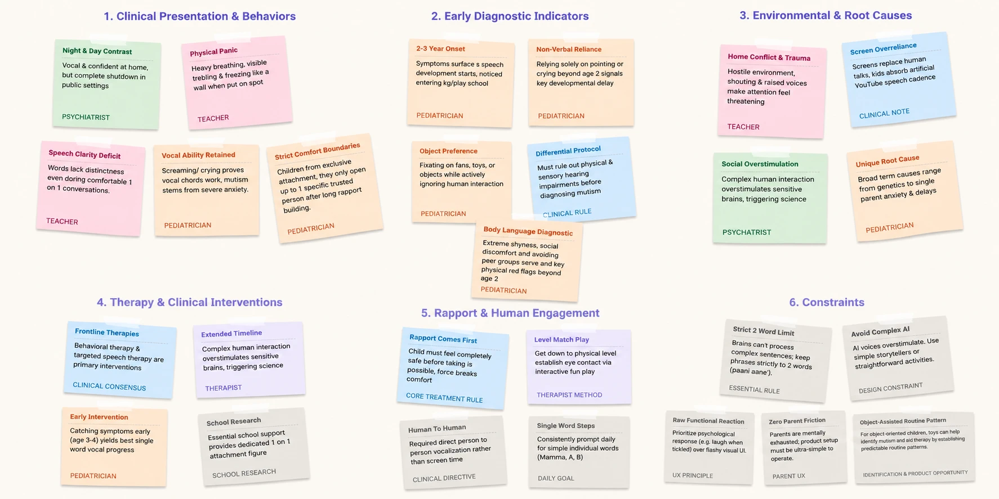

Designing Low Pressure Communication for Children with Selective Mutism
A UX Research project
0 weeks123
Research
Ideation
Concept development
Team of 4
My part — Interviewed a clinician, understood the research insights, mapped features, created the information architecture, and developed the concept.
The starting point
What is Selective Mutism?
Selective mutism is an anxiety-related condition in which a child can speak comfortably in some settings but consistently finds it difficult or impossible to speak in others.
The same child
Familiar environmentSpeaking may feel easier
Familiar people and a sense of safety.
Unfamiliar or high-pressure environmentSpeaking may become difficult
Social expectations or a request to respond can add pressure.
The child’s experience of speaking can change with the situation. Difficulty speaking does not necessarily mean unwillingness to communicate.
Approximately1 in 140 young children are affected by selective mutism.
As we explored disabilities and communication challenges, we remembered an encounter with a child we had met during an outing. We learned that he had selective mutism, a condition we wanted to understand better. This prompted us to explore how it affects children's everyday communication and what support they might need beyond therapy sessions.
What we learned about the condition
And what’s the cause of selective mutism?
There is no single known cause of selective mutism. Temperament may make some children more susceptible to anxiety, but it does not cause the condition on its own. In certain social situations, the expectation to speak can intensify anxiety until the child freezes.
Difficulty speaking in certain situations
Selective mutism is anxiety-related and does not have one single known cause.
01Temperament
Some children may be more susceptible to anxiety.
02Social context
Certain social situations may feel challenging.
03Pressure to speak
Being expected to speak may intensify anxiety.
These are possible contributing factors, not a single explanation for every child.
About causes, anxiety and the freeze response: NHS.
From the literature
What secondary research revealed
We reviewed the condition, behavioural approaches and existing tools to understand what support already exists and where a design response might help.
01 · Understanding the child
Difficulty speaking isn’t unwillingness
Selective mutism is anxiety-related: a child may speak in a familiar setting but be unable to speak in another. That changes how we interpret silence.
Design implication Allow ways to participate without demanding speech.
02 · How support works
Lower pressure, smaller steps
Guidance describes gradual exposure, stimulus fading and shaping, with manageable steps across situations and people.
Design implication Support child-paced practice and recognise small attempts.
03 · Beyond a session
Practice spans everyday settings
Parents, school staff and clinicians can each play a part in support across home, school and community contexts.
Design implication Explore how guidance and observations could travel between sessions.
04 · Existing approaches
Tools answer different needs
Our review included therapy resources, augmentative communication, digital exposure tools and screening questionnaires. These serve different purposes; none should be treated as a replacement for individual clinical guidance.
Design question How might a child-facing tool complement existing care in ordinary communication moments?
How might communication skills carry into less supported settings?
How could families turn guidance into everyday activities?
How might children have more agency in communicating?
Could nonhuman communication partners play a useful role?
What practical tools could help parents?
How could teachers better understand and respond?
These are potential areas to explore, not confirmed gaps or design requirements.
What we needed to learn next
The literature highlighted several questions around communication anxiety, existing support, and how strategies are reinforced across everyday environments. We explored these areas further through primary research with professionals, educators, families, and people with lived experience of selective mutism.
primary research
Understanding the people behind the research
We explored selective mutism through conversations with healthcare professionals, educators, parents, and people with lived experience. These perspectives helped us look beyond the clinical understanding of the condition to explore how communication anxiety is experienced, how others respond to it, and what support can look like across different environments.
“Children don't need to be taught to speak, they need to feel safe enough to speak.”Clinical psychologist interview
Key insights from interviews
Context changes communication
A psychiatrist described children who speak comfortably at home but become much quieter in classrooms and crowded settings.
Paraphrased · Psychiatrist interview
Being put on the spot adds pressure
A teacher described a student becoming visibly distressed when singled out in class, while seeming more comfortable in a one-to-one conversation.
Paraphrased · Teacher interview
Comfort can take time
A paediatrician emphasised building rapport and allowing gradual progress in communication, rather than expecting an immediate verbal response.
Paraphrased · Paediatrician interview
Knowing what to say isn't enough
Wanting to communicate doesn't always mean being able to speak. One person with lived experience described feeling as though the words were stuck in their throat, making it difficult to express what they felt, wanted, or needed.
Paraphrased · Lived-experience individual
The people around the child
Understanding stakeholder needs
Several people and institutions contribute to a child's support system, but their levels of influence and involvement differ. We mapped this ecosystem to understand the relationships around the child before prioritising the stakeholders most relevant to our design.
Prioritising the people who shape everyday support
While several stakeholders contribute to a child's support system, we used an Influence vs Interest Matrix to identify those whose involvement and influence made them particularly relevant to our design focus.
Influence vs Interest Matrix
Influence ↑
High influence Lower interest
School administration
Hospitals / clinic
Government policies
Priority stakeholders
High influence High interest
Parents
Teachers
Psychologists
Low influence Lower interest
Selective Mutism associations
NGOs
Low influence High interest
Friends / peers
Speech / occupational therapist
School counsellor
Interest →
↓
Three perspectives to design for
The matrix prioritises stakeholder groups; these illustrative personas explore needs in greater depth. Kian remains the child and primary user, alongside Rakshitha’s parent perspective and Dr Priyanka’s therapist perspective. They are not individual interview participants.
Child · at the centre
Kian
Wants to join in, draw and share stories.
Experiences
At home he talks freely; at school he may know the answer but feel unable to say it. He may nod or point instead.
Needs
Space to participate at his own pace, without being pushed to speak.
“I know what I want to say... but the words just won’t come out.”Child persona statement
Parent · everyday support
Rakshitha
Tries to help her child feel safe and understood.
Experiences
Works with teachers, notices small changes and worries when others misunderstand her child.
Needs
Practical, low-pressure guidance and a clearer way to recognise progress.
Therapist · clinical guidance
Dr Priyanka
Builds a plan from observation and family feedback.
Experiences
Needs to understand the child’s experiences at home and school, not only in a session.
Needs
More consistent information shared between family, school and clinical support.
What their perspectives made clear:
Kian needs ways to participate in everyday interactions without the pressure to speak.
Rakshitha needs guidance and reassurance on how to support Kian's communication practice.
Dr Priyanka needs a clearer picture of Kian's communication experiences and progress between therapy sessions.
Scope & assumptions
Parent awareness: Parents are already aware that their child has selective mutism.
Existing therapy: The child is receiving guidance from a therapist who assigns activities.
Product scope: The app supports everyday practice and continuity between therapy sessions. It does not diagnose selective mutism or replace professional therapy.
user journey
What does Kian’s life look like right now?
We mapped Kian's journey from therapy into everyday life to explore where communication challenges arise and how his everyday experiences connect back to the people supporting him.
This is an illustrative journey informed by our research, not a record of one child's observed day.
01Kian receives guidance in therapy
Kian and his therapist work on communication goals. His parent may also receive guidance on supporting him outside sessions.
02Kian encounters everyday communication situations
Kian returns to home, school and public settings, where he encounters different people and opportunities to communicate.
03Kian finds speaking difficult in the moment
Kian may want to respond or participate but find speaking difficult in certain situations, even when his parent or therapist is not present.
Potential opportunity: Support the child during everyday communication moments.
04Everyday experiences unfold outside therapy
Kian's communication experiences happen throughout daily life. His parent may witness some moments, while others happen without them being present.
05Kian returns to therapy
The therapist and parent discuss the everyday experiences they know about to guide the next steps.
POTENTIAL SUPPORT GAP
Everyday communication experiences may not consistently make their way back into therapy, leaving the therapist and parent with an incomplete picture of the situations Kian encounters.
06The next therapy session
The cycle begins again
Kian returns to therapy. The parent and therapist can discuss what happened in everyday life and consider how support should continue.
What happens in these everyday moments?
A closer look
Inside one communication moment in Kian’s life
Between therapy sessions, Kian may encounter a communication situation at school. This illustrative example explores what may happen in that moment and what the people supporting him might not see.
A question comes upSomeone at school asks Kian a question or invites him to participate.
Kian wants to respondHe may know what he wants to say, but anxiety makes speaking difficult.
The moment passesKian may remain silent or respond in another way. The people around him may not know what he wanted to communicate.
The experience may go unsharedUnless the moment is noticed and communicated later, his parent and therapist may not know what happened or what support he needed.
WHAT THIS MOMENT REVEALS
The challenge extends beyond speaking.
Kian needs communication support that doesn't add pressure. His parent and therapist may also need a way to understand his everyday experiences, even when they weren't present.
Three views of the same experience
How do their experiences connect?
Kian, Rakshitha and Dr Priyanka each encounter a different part of the same everyday communication experience.
Child
Kian
Experiences the pressure of the question directly, even if his response is a nod, a gesture or silence.
Parent
Rakshitha
Sees and supports everyday attempts, but does not see every moment Kian encounters in other settings.
Therapist
Dr Priyanka
Uses observations, family feedback and sessions to understand Kian’s progress and guide support.
Each person sees a different part of Kian’s experience. The communication moment is difficult for him; the wider challenge is connecting what happens across the people who support him.
The support gap
What happens when the child leaves the therapy room?
The literature raised questions about continuity across settings. The clinician interview emphasised safety, while the stakeholder view and illustrative journeys helped us examine how support could connect to everyday communication moments. This led us to explore child-paced practice between sessions as a complement to professional care, not a cure or replacement for treatment.
Research synthesis
Making sense of the research
We brought together notes from multiple research sources, including interviews and secondary research. We grouped related observations through affinity mapping to identify recurring themes around selective mutism, communication, and support.

Grouping observations across sources helped us organise the research and identify patterns worth exploring further.
What we learned from the research
Psychiatrist and teacher interviews
The setting changes the moment
Interview accounts described easier communication at home and greater difficulty in classrooms or crowded settings. This highlights the importance of context and pressure.
Secondary research and lived experience
Participation can begin without speech
A child may want to communicate but find speaking difficult. Gestures and other small attempts can offer alternative ways to participate.
Secondary research and clinician interviews
Support extends beyond one setting
Families, teachers and clinicians all contribute to support. This raised the question of how guidance might connect across everyday settings.
Design requirements
Turning insights into design principles
Together, our research and journey mapping informed six principles for designing a support system that encourages communication without adding pressure.
01Rapport comes first
Build comfort and trust before introducing new communication steps.
02Small steps matter
Recognise gestures, whispers and gradual attempts.
03Human to human
Support real interactions rather than replace them.
04Low effort for parents
Make guidance and tracking manageable in daily life.
05Familiar objects help
Use predictable, approachable objects to support practice.
06Support must connect
Connect guidance across home, school and therapy.
Problem statement
Children with selective mutism are experiencing anxiety that freezes their speech with unfamiliar people, even though they speak freely at home in everyday places outside their safe environment, like school, shops and public spaces, where there is very little structured support between therapy sessions, which leads to avoidance that deepens the anxiety, slow progress, and missed learning, friendships and independence.
The design opportunity
How might we support children with selective mutism in practising communication in everyday situations between therapy sessions, so they can gradually become morecomfortable communicating outside their safe environments?
↓
Concept exploration
We then started exploring concepts
With comfort and continuity as priorities, we explored four ways to make support feel familiar and usable in a child’s day.
Concept 01
Communication Companion
A friendly object that encourages and appreciates communication attempts.
Concept 02
Adaptable to Environment
One core device used in different ways across school, home and play.
Concept 03 · Selected
Personal Tracker + App
A compact wearable that records everyday moments and connects to an app so progress can be seen over time.
Concept 04
Sling Type Bag
A wearable bag that makes the device part of everyday carry.
Choosing a direction
Designing for real-world use
We compared the four directions against what the research made important: low pressure, everyday relevance, visible small steps and connected adult support. Concept 03 offered the clearest way to carry support into daily life while making small attempts visible over time, so we chose the personal tracker and app.
Low pressureEveryday useSmall progressChild comfortAdult support
So what does the selected concept look like in practice?
The chosen system
A connected support system for everyday communication
That choice became a phygital system: a child-facing clip-on companion paired with an app for activity guidance and progress. We explored animal-inspired forms to make the companion feel more familiar and comforting.
ChildA familiar companion during small activities in real settings.
ParentGuidance for the activity and a place to record what happened.
TherapistGoals and progress information to guide the next step.
But why an animal-shaped product?
Our research explored what children with selective mutism may find comforting, and animals emerged as a potential source of comfort. This insight informed our decision to explore an animal-inspired product, with different animal forms offering children a choice.
Turning the concept into an experience
So how could this concept work in everyday life?
The concept needed to extend beyond the therapy room without making communication another source of pressure. We explored a simple cycle connecting therapist guidance, everyday interaction and feedback.
GuideTherapist sets a goal→PracticeParent opens the activity→ExperienceChild tries it in real life→LearnProgress informs the next step
TherapistSet a small goal
The therapist reviews progress and selects a manageable activity with guidance for the parent.
Parent + childTry it together
The parent introduces the activity and the child tries it in an everyday setting.
ReviewPlan what comes next
The attempt offers information about context, comfort and progress to inform the next step.
The flow clarified what the app needed to make easy to find, record and review.
From flow to structure
Turning the support system into an app
The flow shaped the app’s key destinations: guidance needs to be easy to find, attempts need a place to be recorded, and progress needs to be available when planning the next step.
HomeToday’s activity, current goal and quick progress.
ActivitiesAssigned tasks, details, instructions and history.
ProgressAttempts, situations and patterns over time.
TherapistGoals, recommendations and session information.
CommunityParent experiences and resources.
Profile & settingsChild preferences, rewards and device settings.
Translating the concept into task flows
The Guide → Practice → Experience → Learn loop defined how the support system would work as a whole. To translate this into the app, I mapped five key task flows, including activity completion, progress tracking, therapist guidance and community resources.
01
Completing an Activity
Parent helps the child complete an assigned activity and records the results.
02
Reviewing Progress
Parent reviews communication patterns and progress over time.
03
Therapist Guidance
Parent reviews therapy goals, results and recommendations for next steps.
04
Community Resources
Parent explores other parents’ experiences, videos, blogs and articles.
05
Profile & Device Settings
Parent manages the child’s profile, device settings and preferences.
The final experience
Designing the interface around small steps
To keep practice manageable, the prototype moves from Home to a therapist-assigned activity, through the attempt, and then to a saved record. The situation, goal and instructions stay visible so a parent can support the child without having to guess what to do.
High-fidelity prototype for Task Flow 1 — Completing an Activity
The goal was never to make speaking a score. It was to make support easier to carry into everyday moments.
What comes next
Testing whether the concept works in real life
The concept still needs validation in use. The next step is to check whether parents can complete and record an activity without help, whether the companion feels calm and comfortable for a child, and whether therapists find the progress information useful for planning.
ParentCan the activity be started and recorded without help?
ChildDoes the companion feel comfortable, clear and calm?
TherapistIs the progress useful when planning the next goal?

 Concept 01
Concept 01 Concept 02
Concept 02 Concept 03 · Selected
Concept 03 · Selected Concept 04
Concept 04